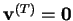
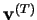
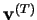
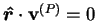
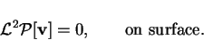
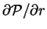

For
 on a spherical surface,
 must be uniform over the surface. Since any function of
must be uniform over the surface. Since any function of  can be subtracted
from
can be subtracted
from
 without affecting
, this constant
can be taken as zero without loss of generality.
without affecting
, this constant
can be taken as zero without loss of generality.
For
 on a spherical surface,
|  | (B.17) |
For a poloidal velocity field to satisfy the no-slip condition,  must be uniform over the surface. Again, there is no loss of generality in requiring it to vanish.